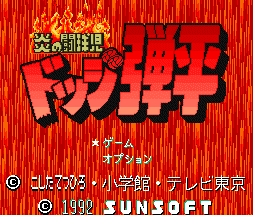

Dodge Danpei - SNES Games

- Company: Sunsoft
- Date Released: 1992
- Genre: Dodgeball simulation
Controls
- A button: Throw
- B button: Throw
- X button: [not used?]
- Y button: Jump
- L button: [not used?]
- R button: Change Character
- Start: Pause
- Select: Pause
You appear to be the leader of a dodge ball team that takes on rival teams. You play in a basketball-like court; crossing the
mid-line is a violation. Jumping over the mid-line to throw the ball at your opponent is allowed though. There are also
teamates along the sidelines that you can pass the ball to and can grab a ball before it goes out of bounds.
Anime Video Game Resource Center © 1998 by Luis A. Cruz